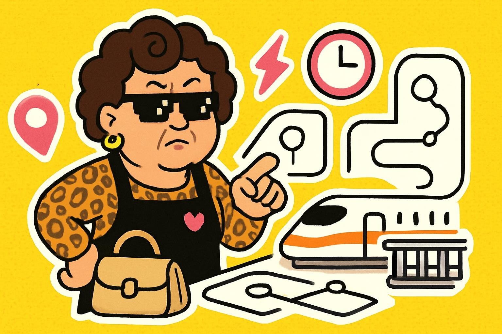

交通新聞 · 2026/05/27
高鐵延誤退費別拖：一年內可以辦，但別拖到忘記。
5 月 25 日高鐵號誌異常造成大延誤，5 月 26 日高鐵公布：受影響旅客一年內可辦理退費，免收手續費。阿姨翻譯：先把票根和資訊留好，不要氣完就忘。
上圖為 AI 生成情境圖，不是新聞照片。
阿姨一句話：高鐵這次不是只有一句不好意思，能退的錢先記起來。
中央社報導，台灣高鐵指出，5 月 25 日受號誌異常影響，約 18 萬人次旅客受波及；針對延誤情況，高鐵提供一年內退費且免手續費的安排。對通勤族來說，這不是八卦，是實際會影響荷包和行程的事。
這類補救方案最容易卡在一件事：當下很亂，事後就忘。阿姨建議先把訂位紀錄、票根、付款截圖和高鐵公告網址存起來。你現在多做一個資料夾，之後就少一次「我記得那天有耶」的懊悔。
阿姨幫你劃重點
- 先留證明：實體票、電子票、付款紀錄都先不要刪。
- 看清期限：這次是自乘車日起一年內可辦，別拖到下一次連假才想起來。
- 先查公告再跑站：不同票種和退費方式可能有細節差異，先看高鐵官網。
今天為什麼值得看
不是每個生活新聞都要衝第一線，但這種跟交通、通勤、退款有關的資訊，晚知道就真的會少拿到東西。阿姨不是叫你天天盯新聞，是叫你挑會影響自己的那種先看。
來源：
中央社 高鐵延誤退費報導、
台灣高鐵官方網站